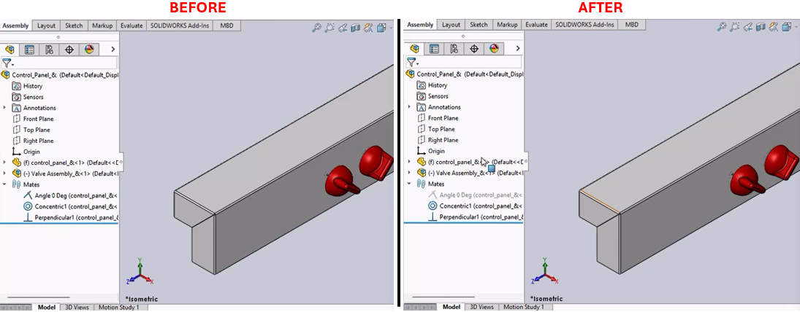

Mate Toggling Macro for SolidWorks
Description
This macro toggles the suppression state of a specified mate named "Angle 0 Deg" in a SolidWorks document. It first unsuppresses the mate if it is suppressed, then suppresses it again. This can be useful for automating the testing of assembly constraints.
System Requirements
- SolidWorks Version: SolidWorks 2014 or newer
- Operating System: Windows 7 or later
Pre-Conditions
Note
The macro is run within an open SolidWorks assembly that contains a mate named "Angle 0 Deg."
Results
- The mate "Angle 0 Deg" is toggled between suppressed and unsuppressed states.
- The assembly view is maximized before the operations (optional and can be enabled by uncommenting certain code lines).
Steps to Setup the Macro
Open SolidWorks:
- Ensure SolidWorks is open and an assembly with the specified mate is active.
Access VBA Editor:
- Press (
Alt + F11) to open the VBA editor in SolidWorks.
- Press (
Create a New Macro:
- Insert a new module and paste the provided VBA code.
Run the Macro:
- Run the macro directly from the VBA editor or save it and run it from the SolidWorks Macro toolbar.
VBA Macro Code
' Disclaimer:
' The code provided should be used at your own risk.
' Blue Byte Systems Inc. assumes no responsibility for any issues or damages that may arise from using or modifying this code.
' For more information, visit [Blue Byte Systems Inc.](https://bluebyte.biz).
Option Explicit
' Declare variables for the SolidWorks application and active document
Dim swApp As Object ' SolidWorks application object
Dim Part As Object ' Active document object (part or assembly)
Dim boolstatus As Boolean ' Boolean to capture operation success
Dim longstatus As Long, longwarnings As Long ' Longs to capture detailed operation statuses
Sub main()
' Initialize the SolidWorks application object
Set swApp = Application.SldWorks
' Get the currently active document
Set Part = swApp.ActiveDoc
' Optional: Declare and set the active model view
Dim myModelView As Object ' Object for controlling the model view
Set myModelView = Part.ActiveView
' Optional: Maximize the SolidWorks window (uncomment to enable functionality)
' myModelView.FrameState = swWindowState_e.swWindowMaximized
' Step 1: Select the mate named "Angle 0 Deg"
boolstatus = Part.Extension.SelectByID2("Angle 0 Deg", "MATE", 0, 0, 0, False, 0, Nothing, 0)
' Step 2: Unsuppress the selected mate to activate it
Part.EditUnsuppress2
' Step 3: Clear the current selection to reset the environment
Part.ClearSelection2 True
' Step 4: Re-select the mate named "Angle 0 Deg"
boolstatus = Part.Extension.SelectByID2("Angle 0 Deg", "MATE", 0, 0, 0, False, 0, Nothing, 0)
' Step 5: Suppress the selected mate to deactivate it
Part.EditSuppress2
' Step 6: Clear the selection again to clean up the selection state
Part.ClearSelection2 True
End Sub
Macro
You can download the macro from here
Customization
Need to modify the macro to meet specific requirements or integrate it with other processes? We provide custom macro development tailored to your needs. Contact us.